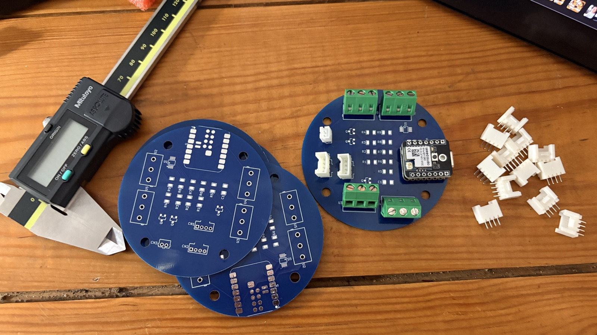
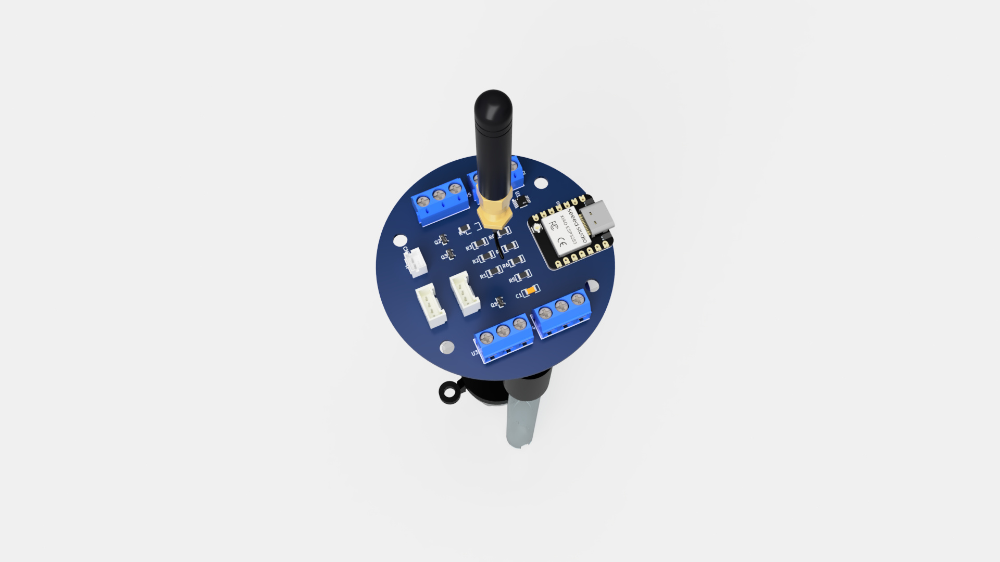
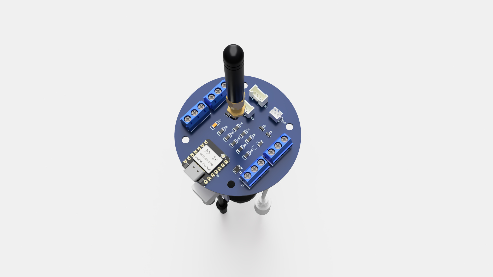
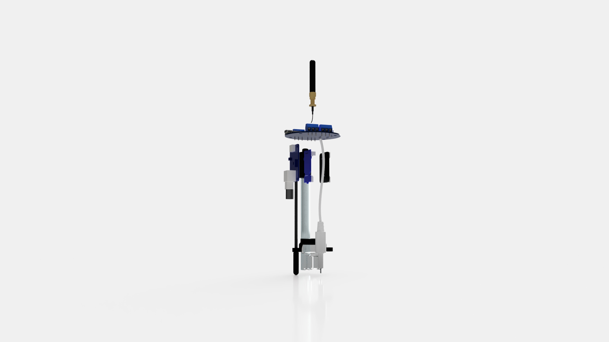

An open reference design for monitoring a water source over LoRaWAN — temperature, dissolved solids, turbidity and pH. All four sensors are calibrated and validated, the node deep-sleeps and streams to a live dashboard, and the dedicated board is fabricated. This page documents how it works and how to reproduce it from the published source.
Firmware and the data pipeline are complete and running; the dedicated board is fabricated. Enclosure, full BOM and field deployment are the next deliverables.
The node's place in the wider system, its runtime lifecycle, the live-dashboard path and the firmware structure — each verified against the published source.
One node among many: WellBouy feeds the shared GROUU server stack; the same infrastructure serves gardens, greenhouses and wells.
← downlink: Node-RED → TTN queue → node RX window · 0x01 set interval (min) · 0x02 reboot — applied next wake (Class A).
Modular nodes choose their radio by context: Wi-Fi where a network exists, LoRaWAN where it doesn't. Both land in the same server stack.
The 2014 vision (V0), finally modular: radio chosen per node, server layer anywhere.
Wake, measure, transmit, sleep — as implemented in src/main.cpp: sensors are read and powered down before the radio wakes.
How the public page gets its numbers — implemented and running.
Values illustrative. Live: temp · TDS · turbidity · pH · RSSI/SNR — battery + packet-loss pending.
Procedural C++ (PlatformIO), one cycle per wake: main.cpp orchestrates the duty cycle, each sensor is a small two-function module, every field-tunable constant lives in config.h.
setup() → readAllSensors() → sensors/* → CayenneLPP → loraConnect() → sendReceive() → handleDownlink() → goToSleep() · loop() never runs — deep sleep restarts setup().
All modules are off-the-shelf, so the design is reproducible without custom silicon. Every driver is written and calibrated.
Waterproof digital probe on OneWire, 4.7 kΩ pull-up, 3.3 V. Clean °C to serial and uplink.
Analog Grove TDS on the switched 5 V rail, output into the ADS (A0). DFRobot Gravity two-point k-value algorithm, temp-compensated ppm.
Optical head, cabled; a 10k / 6.8k divider brings the 5 V output into ADC range (A1) → NTU, anchored to clear water.
GigaΩ analog conditioner (pH 7 ≈ 2.5 V) through a 10k / 18k divider into the ADS (A2); three-point calibration (pH 4 / 7 / 10, segmented at pH 7).

Always-on — MCU, radio, ADS1115 and the DS18B20.
Switched — analog conditioners powered ~1 s per cycle through a high-side load switch (GPIO1 / D0).
1S LiPo (4500 mAh), mains-rechargeable — a fixed well site needs no panel. The board still exposes battery + solar inputs, so the same design runs off-grid elsewhere.
The whole node is in one PlatformIO project — staged bring-up sketches plus the integrated production firmware. Below is the heart of it, and the full parts list with links.
src/main.cpp — CayenneLPP encode + uplink (TDS & turbidity ride the Luminosity type, 0–65535, because Analog Input overflows above 327.67)
CayenneLPP lpp(51);
lpp.reset();
lpp.addTemperature(1, isnan(r.temperatureC) ? 0.0f : r.temperatureC);
lpp.addAnalogInput(2, r.ph);
lpp.addLuminosity (3, (uint16_t)(r.turbidityNtu + 0.5f)); // turbidity
lpp.addLuminosity (4, (uint16_t)(r.tdsPpm + 0.5f)); // TDS
if (bootCount == 1 || (bootCount % 24) == 0)
lpp.addGPS(5, FIXED_LATITUDE, FIXED_LONGITUDE, FIXED_ALTITUDE);
int16_t state = node.sendReceive(lpp.getBuffer(), lpp.getSize(),
LPP_FPORT, dnData, &dnLen, /*confirmed=*/false);
| Part | Role | Source |
|---|---|---|
| Seeed XIAO ESP32-S3 + Wio-SX1262 | MCU + LoRa radio (SX1262 via RadioLib) | Seeed ↗ |
| ADS1115 | Shared 16-bit I²C ADC @ 0x48 — analog sensors on A0–A2 | — |
| DS18B20 (waterproof) | Water temperature — 1-Wire (GPIO4) + 4.7k pull-up | Adafruit ↗in stock |
| Seeed Grove TDS | Dissolved solids (A0) — DFRobot Gravity algorithm, temp-compensated | Seeed ↗in stock |
| DFRobot SEN0189 | Turbidity (A1) via 10k/6.8k divider, 5 V | DFRobot ↗in stock |
| Phidgets ASP200 pH probe | pH 0–14, gel-filled BNC probe | Phidgets ↗in stock |
| Phidgets 1130 pH/ORP adapter | BNC → analog (A2) via 10k/18k divider, 5 V | Phidgets ↗in stock |
| Grove Shield for XIAO | Sensor carrier (in lieu of a custom PCB) | Seeed ↗to order |
| LiPo 1S 4500 mAh | Battery — mains-rechargeable, no solar (B1) | Mauser ↗to order |
| Dividers 10k/6.8k · 10k/18k | Level-shift turbidity & pH into ADC range | — |
| M12 glands · BNC bulkhead · O-rings | Hull pass-throughs & seal | to order |
| pH buffers 4 / 7 / 10 · TDS KCl 84 / 1413 µS/cm | pH three-point + TDS two-point calibration standards | to order |
The board and enclosure are modelled in Autodesk Fusion; the viewer below always shows the latest version. Under it: the component layout the hull has to wrap, and a timelapse sketching shapes over that arrangement.



The firmware is organised so anyone can rebuild it incrementally — flash one stage, confirm it on serial and TTN, move on. Register your own device on TTN (EU868, LoRaWAN 1.0.x, OTAA), set the payload formatter to CayenneLPP, and keep your keys in an untracked secrets.h.